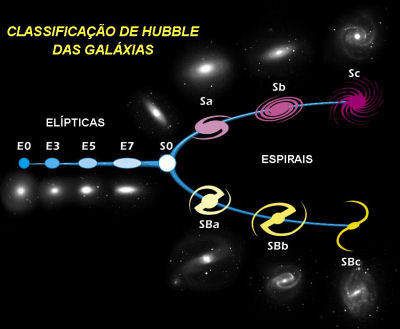

O que são?
Denominamos galáxia a uma gigantesca acumulação de estrelas, poeiras e gás, que aparece isolada no espaço e cujos constituintes se mantêm unidos entre si devido a mútuas interacções gravitacionais, sendo por vezes o seu comportamento afectado por galáxias vizinhas. Qualquer galáxia possui milhares de milhões de estrelas.
Sabemos hoje que a existência de galáxias apenas é possível devido a ter sido criada uma pequena assimetria nos primeiros segundos do Universo, que permitiu que ao longo dos milhões de anos que se seguiram se formassem aglomerados de gás e poeiras que depois, com o nascimento de estrelas, dessem origem às galáxias. Caso essa assimetria não tivesse ocorrido, o Universo teria evoluído perfeitamente homogéneo, sem a existência de quaisquer das estruturas celestes que hoje conhecemos.
Tipos de galáxias
Existem três tipos principais de galáxias: elípticas, espirais e irregulares. Uma descrição ligeiramente mais extensa dos tipos de galáxias baseada na aparência das mesmas é dada pela classificação de Hubble. Esta classificação é totalmente baseada no tipo morfológico visual das galáxias, desprezando a taxa de formação de estrelas bem como a atividade no núcleo.
- Galáxias elípticas
- Galáxias espirais
- Galáxias irregulares
- Outras morfologias
O sistema de classificação de Hubble identifica as galáxias elípticas com base na sua elipticidade, variando de E0, quase esféricas, até E7, que são bastante alongadas. Essas galáxias têm um perfil elipsoidal, o que lhes confere uma aparência elíptica independentemente do ângulo de visão. A sua aparência mostra pouca estrutura contendo tipicamente pouca matéria interestelar.
As maiores galáxias são elípticas gigantes. Acredita-se que muitas galáxias elípticas se formam devido à interação de galáxias, resultando em colisões e junções. Elas podem crescer até atingir tamanhos enormes sendo frequentemente encontradas perto do núcleo de grandes aglomerados de galáxias.
Galáxias espirais consistem num disco giratório de estrelas e meio interestelar, juntamente com um bulbo central destacado, composto por estrelas mais velhas. Para fora deste bulbo extendem-se braços relativamente brilhantes. Na classificação de Hubble, as galáxias espirais são indicadas como tipo S, seguido por uma letra (a, b ou c) que indica o grau de aproximação dos braços espirais e o tamanho do bulbo central. Uma galáxia Sa tem braços apertados e pouco definidos, com uma região de núcleo relativamente grande. Por outro lado, uma galáxia Sc tem braços abertos e bem definidos e uma pequena região de núcleo.
A maioria das galáxias espirais possui uma faixa linear de estrelas em forma de barra que se estende para fora de cada lado do núcleo e depois se junta à estrutura do braço espiral. Na classificação de Hubble, são designadas por um SB, seguido de uma letra minúscula (a, b ou c) que indica a forma do braço espiral, da mesma forma como são classificadas as galáxias espirais normais.
Existe um número de galáxias que não podem ser classificadas morfologicamente como espirais ou elípticas. São assim classificadas como galáxias irregulares. Uma galáxia Irr-I possui alguma estrutura, mas não se alinha adequadamente com a classificação de Hubble.
Para além dos tipos acima apresentados é possível encontrar galáxias lenticulares e em anel. Este tipo de galáxias peculiares são formações galácticas que desenvolvem propriedades incomuns devido a interações com outras galáxias.
A galáxia em anel possui uma estrutura de estrelas e meio interestelar em forma de anel, circundando um núcleo vazio. Acredita-se que uma galáxia em anel acontece quando uma galáxia pequena passa pelo núcleo de uma galáxia espiral.
Uma galáxia lenticular é uma forma intermediária que possui propriedades de galáxias elípticas e espirais. São definidas como tipo S0 na classificação de Hubble e possuem braços espirais mal definidos, com um halo elíptico de estrelas. Galáxias lenticulares barradas são denominadas Sb0 na classificação de Hubble.
A nossa galáxia: A Via Láctea
O nosso Sistema Solar encontra-se na galáxia denominada de Via Láctea. Esta é uma galáxia espiral sendo estimado que a sua idade seja de mais de treze mil milhões de anos, período no qual passou por várias fases evolutivas até atingir a sua forma atual. Formada por centenas de mil milhões de estrelas, a galáxia possui estruturas diferenciadas entre si.
A nossa Galáxia é um membro do Grupo Local, e domina em conjunto com a Galáxia de Andrómeda; no total o Grupo Local contém cerca de 30 galáxias num espaço com cerca de 1 megaparsec de diâmetro. O Grupo Local é parte do Superenxame Local, também conhecido como o Superenxame de Virgem.
No núcleo da galáxia, que possui forma alongada, há uma grande concentração de estrelas, sendo que o exato centro da galáxia abriga um buraco negro supermassivo. Ao seu redor estende-se o disco galáctico, formado por estrelas dos mais diversos tipos, nebulosas e poeira interestelar. É nesta proeminente parte da Via Láctea que se manifestam os braços espirais.